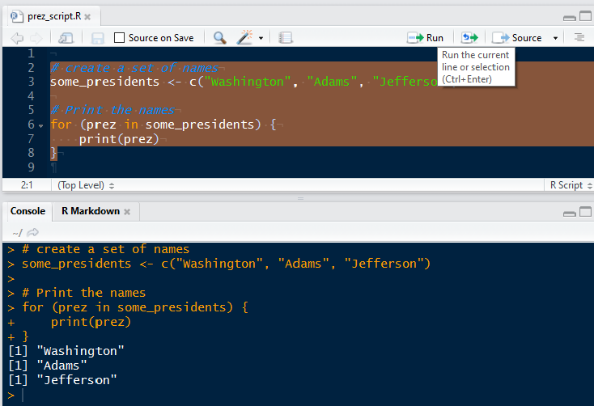
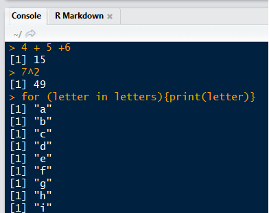

Introduction
Setting Up Your Environment
Introduction to R
Programming Fundamentals
R Data Structures
Logical Operators
Subsetting
Controlling Program Flow
Additional Resources
My Marquette Experience:
Since Marquette:
{uptasticsearch} and {pkgnet} packages on CRANLightGBM
The main objectives for the course are as follows:
Programming in R begins with installing R!
R comes with a command-line client and a default GUI, but most users prefer to use other IDEs ("integrated development environment"). The most popular IDE for R, and the one we'll use in this class, is RStudio:
Sequences of R code are typically saved in scripts with the file extension ".R". To open a blank script in RStudio and start editing, you can either go to "File --> New File --> R script" or choose "R Script" from the paper image in RStudio:
When you author a script in RStudio, the file you create will be stored with the file extension ".R" by default. Out in the wild (i.e. editing in text editors), you are responsible for saving files with the appropriate file extension so the software that uses them can interpret them correctly. Trust me, there are a lot of them
A few common ones you'll want to know for this course:
Scripts and Docs
Data
R is an interpreted language (more on this later). TL;DR, you need to send your code to some software that knows what to do with it ("R"). RStudio makes this super easy to do. You can execute your code interactively (one line at a time) in the R console or run your .R scripts using the "run" button.
Using Scripts

The Console

When R is just one of the tools in your stack, it's often quicker to execute your code from a terminal rather than going into a dedicated application for each type of file.
The R REPL
R from the command linequit() or q()Rscript
Rscript command.Interpreted languages are those which break commands down into building blocks called "subroutines" that have already been compiled in machine code (source: Wikipedia). Much of the R source code (including these subroutines) is actually written in C.
To ensure that that process of breaking down ("interpreting") code goes smoothly, R needs to use a few keywords to identify crucial operations. Like other scripting languages, it has a set of "reserved words" which you cannot use as object names.
Run ?reserved in RStudio
Run TRUE = 4 in RStudio
Some languages like Java required you to declare the types of objects you create
R is "dynamically typed"
| Extension | Description |
|---|---|
| .r, .R | Text format for scripts. |
| .rda, .RData | R data format. One or many R objects |
| .rds | R data format. Single R object. Can be loaded into a named object |
# .r and .R scripts can be run inside R with source()
source("my_script.R")
# .rda and .RData files can be loaded into an R session with load()
load("all_of_the_data.rda")
# .rds files can be read directly into an R object
someData <- readRDS("my_data.rds")
When you execute a statement like x <- 5 in R, you are creating an object in memory which holds the numeric value 5 and is referenced by the variable name "x".
If you later ask R to do something like y <- x + 2, it will search through a series of namespaces until it finds a variable called "x". Namespaces can be thought of as collections of labels pointing to places in memory. You can use R's search() command to examine the ordered list of namespaces that R will search in for variables.
# Check the search path of namespaces
search()
# use ls() to list the objects in one of those namespaces
ls("package:stats")
Languages like Java and C are more verbose than R partially because they require programmers to explicitly declare types for data values. We will not go into the intricacy of typing in this course, but you should be familiar with the following types (this knowledge will serve you well across all languages):
anInteger <- 1LsomeNums <- c(1.005, 2)someLogicals <- c(TRUE, FALSE, FALSE)stringVar <- "Chicago Heights"# Addition with "+"
4 + 5
## [1] 9
# Subtraction with "-"
100 - 99
## [1] 1
# Multiplication with "*"
4 * 5
## [1] 20
# Division with "/"
15 / 3
## [1] 5
# Exponentiation with "^"
2^3
## [1] 8
# Order of Operations
4 * 5 + 5 / 5
## [1] 21
# Control with parentheses
4 * (5 + 5) / 5
## [1] 8
# Ordered sequence of integers
1:5
# Counting by 2s
seq(from = 0, to = 14, by = 2)
# Replicate the same values
rep(TRUE, 6)
# Concatenate multiple values with the "c" operator
c("all", "of", "the", "lights")
# Watch out! Mixing types will lead to silent coercion
c(1, TRUE, "hellos")
# Some functions, when applied over a vector, return a single value
is.numeric(rnorm(100))
# Others will return a vector of results
is.na(c(1, 5, 10, NA, 8))
# Vectors can be named
batting_avg <- c(youkilis = 0.300, ortiz = 0.355, nixon = 0.285)
# You can combine two vectors with c()
x <- c("a", "b", "c")
y <- c("1", "2", "3")
c(x, y)
Vectors are the first multi-item data structure all R programmers learn. Soon, though, you may find yourself frustrated with the fact that they can only hold a single type. To handle cases where you want to package multiple types (and even multiple objects!) together, we will turn to a data structure called a list.
| Capabilities | Vectors | Lists |
|---|---|---|
| Optional use of named elements | ✔ | ✔ |
| Support math operations like mean() | ✔ | |
| Hold multiple types | ✔ | |
| Hold multiple objects | ✔ |
# Create a list with list()
myList <- list(a = 1, b = rep(TRUE, 10), x = c("shakezoola", "mic", "rulah"))
# Examine it with str()
str(myList)
R comes with a special type called a "factor" for modelling categorical variables. To save memory, internally R will convert factor values to integers and then keep around a single table that says, for example, 1 = "Africa", 2 = "Asia", etc.
regions <- as.factor(c("Africa", "Asia", "Europe", "Asia"))
region_fac <- as.factor(regions)
print(region_fac)
## [1] Africa Asia Europe Asia
## Levels: Africa Asia Europe
print(as.integer(region_fac))
## [1] 1 2 3 2
See "Factors" in the programming supplement for an example.
Data frames are tables of data. Each column of a data frame can be a different type, but all values within a column must be the same type.
See "Data Frames" in the programming supplement for some examples.
Often in your code, you'll want to do/not do something or select / not select some data based on a logical condition (a statement that evaluates to TRUE or FALSE).
# "and" logic is expressed with "&"
TRUE & TRUE # TRUE
TRUE & FALSE # FALSE
FALSE & FALSE # FALSE
-5 < 5 & 3 > 2 # TRUE
# "or" logic is expressed with "|"
TRUE | TRUE # TRUE
TRUE | FALSE # TRUE
FALSE | FALSE # FALSE
3 < 8 | 8 > 19 # TRUE
The most common operators used to generate logicals are >, <, ==, and !=
# "equality" logic is specified with "=="
3 == 3 # TRUE
4 == 4.1 # FALSE
# "not" logic is specified with !. In a special case, != signifies "not equal"
!TRUE # FALSE
!FALSE # TRUE
! (TRUE | FALSE) # FALSE
4 != 5 # TRUE
# "greater than" and "less than" logic are specified in the way you might expect
5 < 5 # FALSE
6 <= 6 # TRUE
4 > 2 # TRUE
3 >= 3 # TRUE
As a general rule, when you put a vector on the left-hand side of a logical condition like == or >, you will get back a vector as a result.
vehicleSizes <- c(1, 5, 5, 2, 4)
# Create a logical index. Note that we get a VECTOR of logicals back
bigCarIndex <- vehicleSizes > 4
# Taking the SUM of a logical vector tells you the number of TRUEs.
sum(bigCarIndex)
# Taking the MEAN of a logical vector tells you the proportion of TRUEs
mean(bigCarIndex)
Subsetting is the act of retrieving a portion of an object, usually based on some logical condition (e.g. "all elements greater than 5"). In R, this is done with the [ operator.
# Create a vector to work with
myVec <- c(var1 = 10, var2 = 15, var3 = 20, av4 = 6)
# "the first element"
myVec[1]
## var1
## 10
# "second to fourth elements"
myVec[2:4]
## var2 var3 av4
## 15 20 6
# "the element named var3"
myVec["var3"]
## var3
## 20
Lists, arbitrary collections of R objects, support three subsetting operators.
[ = returns a 1-element list
someList["grades"]someList[1][[ = returns the object in its natural form (whatever it would look like if it wasn't in a list)
someList[["grades"]]someList[[1]]$ = similar to [[, but uses unquoted keys and cannot use positions
someList$gradesPlease see "Subsetting Lists" in the programming supplement.
Data frames are the workhorse data structure of statistics in R. The best way to learn data frame subsetting is to just walk through the examples below:
# Create a data frame
someDF <- data.frame(
, conference = c("Big East", "Big Ten", "Big East", "ACC", "SEC")
, school_name = c("Villanova", "Minnesota", "Marquette", "Duke", "LSU")
, wins = c(18, 14, 19, 24, 12)
, ppg = c(71.5, 45.8, 66.9, 83.4, 58.7)
)
# Grab the wins column (NOTE: will give you back a vector)
someDF[, "wins"]
# Grab the first 3 rows and the two numeric columns
someDF[1:3, c("wins", "ppg")]
So far, we've seen how to subset R objects using numeric indices and named elements. These are useful approaches, but both require you to know something about the contents of the object you're working with.
Using these methods (especially numeric indices like saying give me columns 2-4) can make your code confusing and hard for others to reason about. Wherever possible, I strongly recommend using logical vectors for subsetting. This makes your code intuitive and more flexible to change.
Please see "Using Logical Vectors" in the programming supplement for an example.
Soon after you start writing code (in any language), you'll find yourself saying "I only want to do this thing if certain conditions are met". This type of logic is expressed using if-else syntax)
x <- 4
if (x > 5){
print("x is above the threshold")
}
See "If-Else" in the programming supplement for more examples.
What if you want to express more than two possible outcomes? For this, we could use R's else if construct to nest conditions. Note that conditional blocks can have any number of "else if" statements, but only one "else" block.
# Try to think through what this will do before you run it yourself
if (4 > 5){
print("3")
} else if (6 <= (5/10)) {
print("1")
} else if (4 + 4 + 4 == 12.0001) {
print("4")
} else {
print("2")
}
One of the most powerful characteristics of general purpose programming languages is their ability to automate repetitive tasks. When you know that you want to do something a fixed number of times (say, squaring each item in a vector), you can use a for loop.
# Create a vector
x <- c(1, 4, 6)
# Print the square of each element one at a time
print(1^2)
print(4^2)
print(6^2)
# BETTER: Loop over the vector and print the square of each element
for (some_number in x){
print(some_number^2)
}
For loops are suitable for many applications, but they can be too restrictive in some cases. When you want to say "run this code until some condition is met", a while loops is more appropriate.
i <- 1
while (i < 5) {
print(i)
i <- i + 1
}
## [1] 1
## [1] 2
## [1] 3
## [1] 4
See "While Loops" in the programming supplement for a hands-on example.
For the brave and curious, I've included a few online free resources for learning more about the technologies we discussed.
R: swirl | JHU Data Science
RStudio: RStudio blog
Subsetting: Quick-R | R-bloggers | Advanced R book